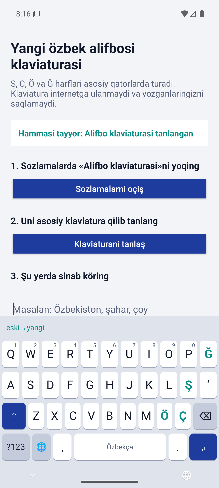
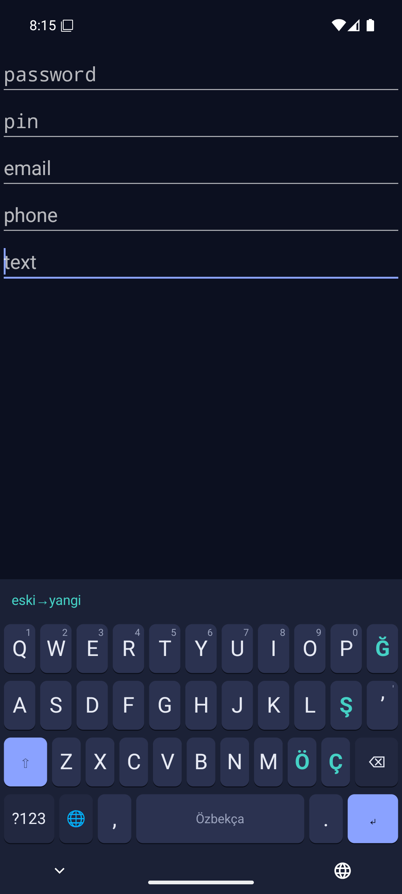

Klaviatura yangi özbek alifbosi uçun
Клавиатура для нового узбекского алфавита
21.10.2026 dagi O‘RQ-1184-son Qonun bilan tasdiqlangan alifbo. Ş, Ç, Ö va Ğ harflari asosiy qatorlarda turadi. Klaviatura internetga ulanmaydi va yozganlaringizni saqlamaydi.
Алфавит утверждён законом O‘RQ-1184 от 21.10.2026. Буквы Ş, Ç, Ö и Ğ стоят на основных рядах. Клавиатура не подключается к интернету и не сохраняет то, что вы пишете.
Yuklab oliş
Скачать
Android
Android 8.0 va undan yangi. Özbekça va rusça tartib, söz tavsiyalari, emoji, «eski→yangi» tugmasi.
Android 8.0 и новее. Узбекская и русская раскладки, подсказки слов, эмодзи, кнопка «eski→yangi».
APKWindows 10 / 11
«Özbek (yangi alifbo)» klaviatura tartibi va Ctrl+Shift+Y bilan eski matnni yangi alifboga öğiradigan konvertor.
Раскладка «Özbek (yangi alifbo)» и конвертер: Ctrl+Shift+Y переписывает выделенный текст на новый алфавит.
alifbo-setup.exeAndroid
Android


Windows tartibi
Раскладка Windows
Asosi — inglizça (AQŞ) tartib. Öngdagi beşta tugma yangi harflarni beradi, eski belgilar AltGr (öng Alt) orqali.
Основа — американская раскладка. Пять клавиш справа дают новые буквы, прежние символы — через AltGr (правый Alt).
| TugmaКлавиша | — | Shift | AltGr | AltGr + Shift |
|---|---|---|---|---|
| [ | ğ | Ğ | [ | { |
| ] | ö | Ö | ] | } |
| \ | ç | Ç | \ | | |
| ; | ş | Ş | ; | : |
| ' | ʼ | " | ' |
Xavfsizlik
Безопасность
- Android ilovasida birorta ham ruxsat yöq, internet ham. Buni telefon sozlamalarida tekşiriş mumkin.
- Parol va PIN-kod maydonlarida klaviatura matnni öqimaydi, tavsiya bermaydi va harfni kattalaştirib körsatmaydi.
- Yozilgan matn saqlanmaydi, jurnalga yozilmaydi, zaxira nusxaga tuşmaydi.
- Reklama, statistika va begona kutubxonalar yöq. Kod oçiq: GitHub.
- У Android-приложения нет ни одного разрешения, в том числе интернета. Это можно проверить в настройках телефона.
- В полях паролей и PIN-кодов клавиатура не читает текст, не подсказывает и не показывает букву крупно.
- Набранный текст не сохраняется, не пишется в журнал и не попадает в резервные копии.
- Нет рекламы, аналитики и сторонних библиотек. Код открыт: GitHub.
Loyiha pasportiПаспорт проекта · Qöllanma: örnatiş va foydalanişИнструкция: установка и использование (PDF) · Maxfiylik siyosatiПолитика конфиденциальности